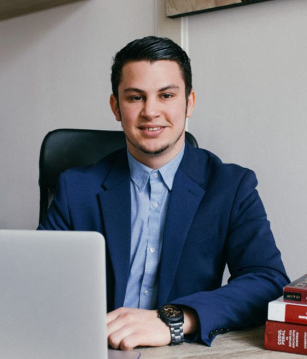
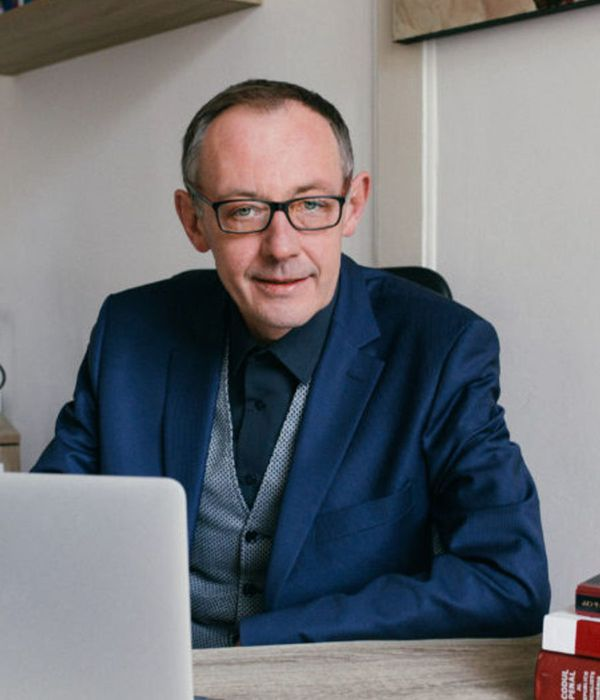
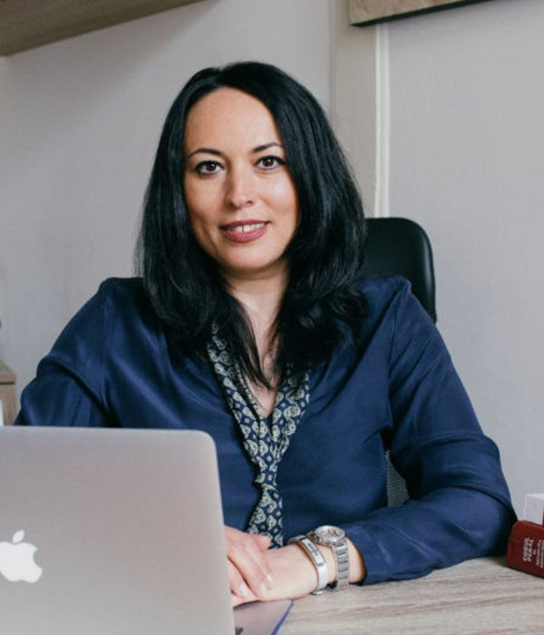

Avocat Majorán Tamás, specialist în domeniul dreptului penal, contencios administrativ și al composesoratelor, precum și în constituirea și funcționarea asociațiilor și fundațiilor.
Avocat Majorán Tamás este vorbitor de limbă română, maghiară și engleză.Avocat Matolczki László, specialist în domeniul dreptului civil, familiei și comercial, precum și în dreptul contravențional.
Avocat Matolczki László este vorbitor de limbă română, maghiară și engleză.

Avocat Szőcs Sándor Attila, titularul cabinetului, cu 25 de ani de experiență, specialist în domeniul dreptului penal, în domeniul contenciosului administrativ și al composesoratelor.
Titularul cabinetului este vorbitor de limbă română, maghiară şi germană.

Bărcan Monica Ioana, angajată în cabinetul nostru pe post de consilier juridic, specialistă în domeniul dreptului afacerilor, al problemelor de drept civil legate de imobile și Carte Funciară, precum și în domeniul composesoratelor urbariale.
Bărcan Monica Ioana este vorbitoare de limbă română și engleză.